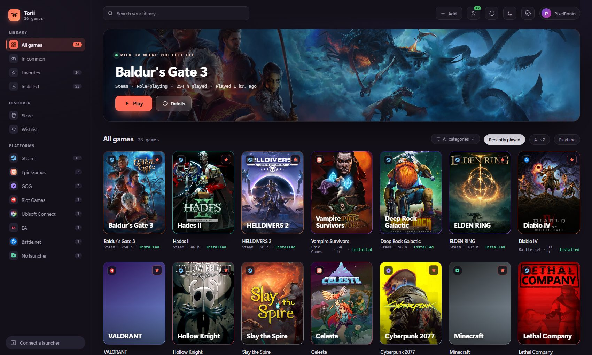

A modern interface, in two languages
Big covers, light and dark themes, and game descriptions fetched in your language from the stores themselves — not machine-translated.

Steam, Epic, GOG, Ubisoft, EA, Battle.net — and even the games that come from no launcher at all. Torii brings them into one library, with their covers, your playtime and what your friends are playing.
Download for WindowsWindows 10 & 11 · 64-bit · free or download the .msi
Try the demo in your browser nothing to install

One library, not five
Torii reads your installed launchers and your online accounts. A game you own on both Steam and GOG shows up once, and you pick the launcher when you hit play. Covers, playtime and the date of your last session come along.
Before you buy
Torii has a store built in. For any game, it compares what dozens of sellers are asking — the launchers' official stores as well as key resellers — and puts the lowest price ever recorded next to today's. So you know whether a deal is actually good, not just whether it shows a discount.
Torii sells nothing and takes no cut: the buy button opens the seller's own store. And games lent to you through Steam Family Sharing show up too — no point buying what you can already play.
No launcher, no shortcut to create
Genshin Impact, Minecraft, a Game Pass title, an executable sitting on your disk: Torii spots them on its own while you play, finds their real title and cover, and files them with the rest.
It doesn't guess at random — it relies on the list of games Windows already keeps. A browser or a word processor won't sneak in.
Playing together
See who's playing what right now and what you have in common, and jump into the same game even if you don't own it on the same launcher. A friend on GOG and you on Steam — it's the same game.
Nothing leaves your PC until you allow it. Three levels of sharing, hidden games always left out, and no history of what you play is kept.
What are we playing tonight?
Torii cross-checks your library with your friends' and lists the games you both own. No more endless “do you have this one?” before finding something to launch.
Tick several friends at once: you get what the whole group can play together tonight, without anyone buying anything.
Every game gets a page
Banner, description in your language, genre, developer, size on disk, screenshots, unlocked achievements, playtime and how many people are playing right now. All without leaving Torii.
If you're looking for a game library manager for Windows, here's plainly what Torii brings — you decide what matters to you.
Big covers, light and dark themes, and game descriptions fetched in your language from the stores themselves — not machine-translated.
Your friends' status, the games you share and the ability to join the same game, whatever launcher each of you uses.
Games that no launcher reports are spotted while you play, then identified and filed on their own.
Sellers compared for the same game, the all-time low alongside, your Steam wishlist tracked and an alert when a title drops back to it.
A few megabytes, a real Windows executable. It keeps track of your sessions without weighing on your machine while you play.
No ads, no selling of data. An account is only needed for the social features, and stays optional.
Yes. Torii follows your Windows language, and you can switch between English and French at any time in Settings. Game descriptions and genres are fetched in the language you pick. The region used for prices is a separate setting.
Yes — the same code, built for the browser. Only the library is different: the demo's is made up. Anything that has to talk to Windows (launching a game, reading your launchers, signing in to an account) does nothing in a browser tab, of course. Open the demo.
Yes, completely, and without ads. Downloading it doesn't require an account.
Steam, Epic Games, GOG, Ubisoft Connect, EA, Battle.net and Riot Games — plus games you add by hand and games detected outside any launcher. What Torii reads from Steam, in detail.
No. The library works without any Torii account. You only need one for the social features — seeing your friends and what they're playing — and it stays optional.
Yes. Windows flags any app whose author hasn't paid for a code-signing certificate, regardless of what the file contains. To continue: More info, then Run anyway. The installer is built publicly by GitHub Actions from the repository's source code.
Not today: Torii is a Windows app (10 and 11, 64-bit).
Nothing leaves your PC until you turn it on. Status sharing and library sharing are off by default, hidden games are never included, and no history of what you play is kept on the server.
Before installing anything
The demo is the app itself, as is, in your browser — running on a made-up library of about thirty real games. Click around the grid, open a game page, switch themes, browse the friends list.
Anything that touches your machine — launching a game, connecting an account — does nothing there, naturally: there's no machine behind it.
Open the demoInstalls in a minute. Nothing to set up: Torii finds your games on its own.
Download for WindowsWindows will show an unknown publisher warning: More info → Run anyway.